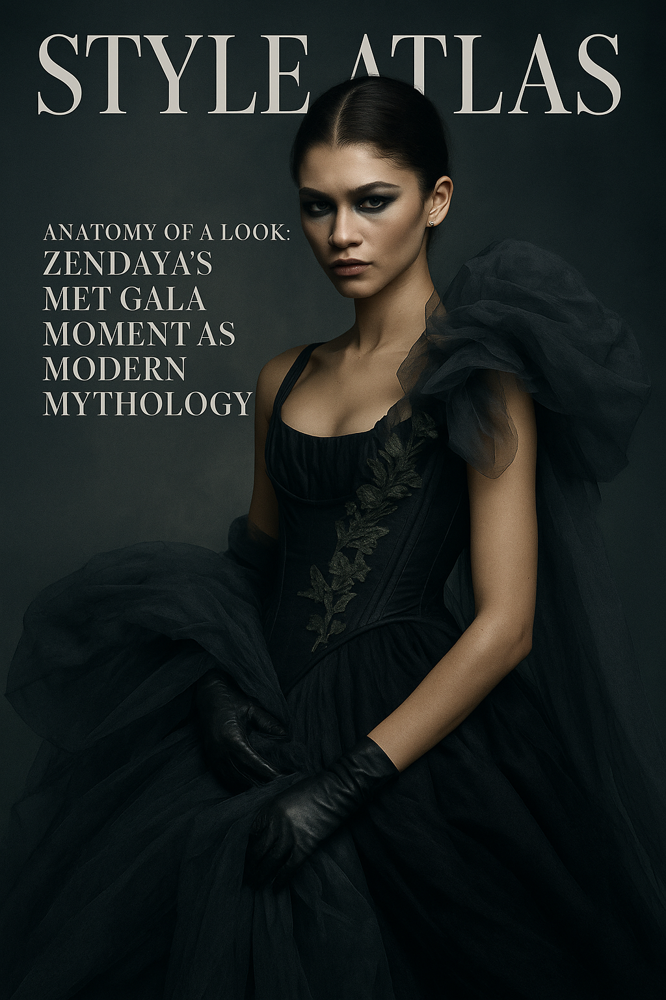
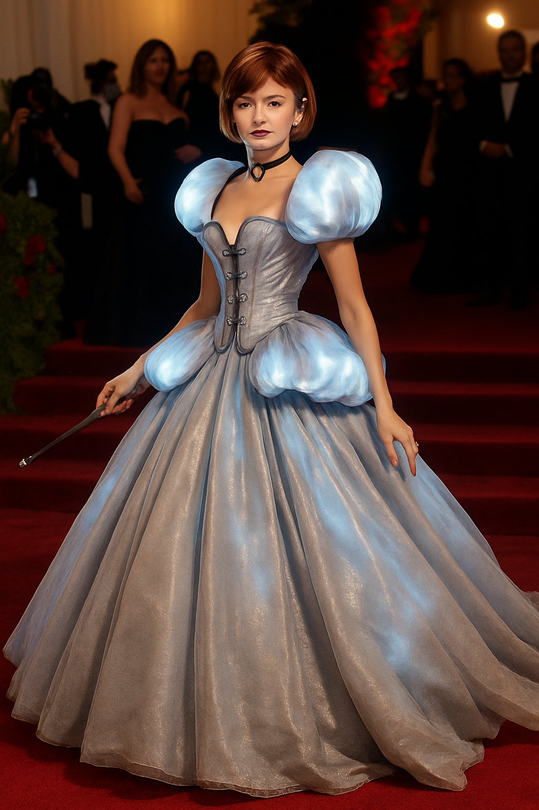
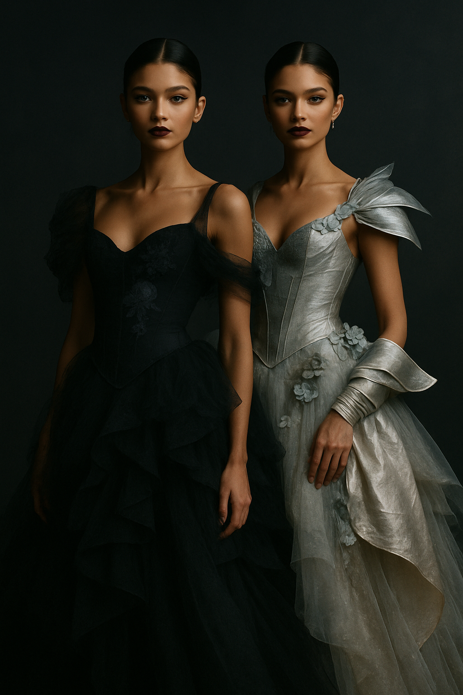
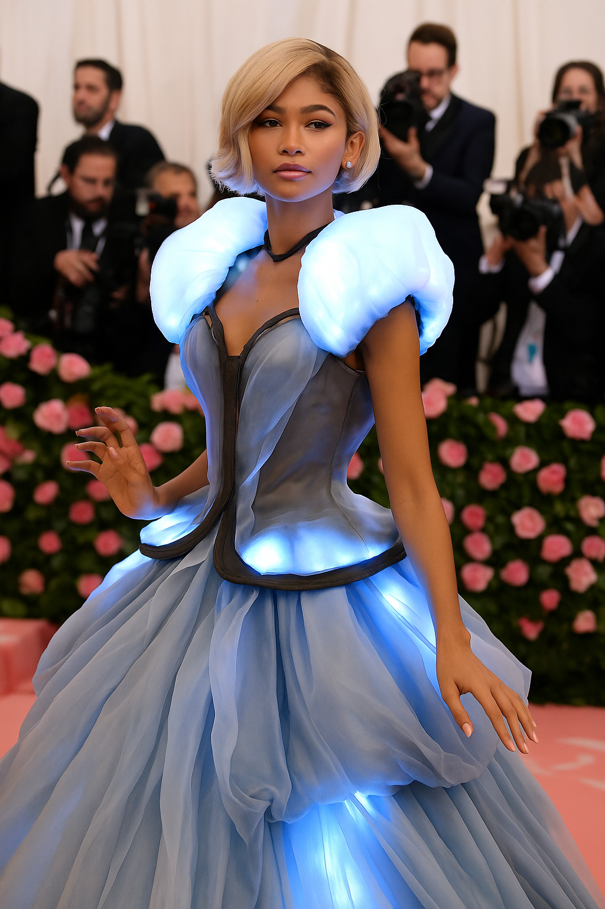

Anatomy of a Look: Zendaya’s Met Gala Moment as Modern Mythology
When Zendaya walked the Met Gala 2024 red carpet in layered couture and cinematic control, she wasn’t just styled—she was sculpted.
Some red carpet moments are beautiful. Some are bold. And then there are moments like Zendaya’s at the 2024 Met Gala—where fashion ceases to be clothing and becomes narrative architecture. Her look wasn’t just designed. It was composed, like a scene from a film no one else had seen yet.
"This wasn’t an outfit. It was a fable in motion." — Style Atlas
The Look in Question
The look, styled by Law Roach and designed by Maison Margiela’s John Galliano, combined Victorian fantasy with cinematic noir. A darkly romantic silhouette, a corseted bodice with botanical appliqués, layers of tulle and structured asymmetry—all under a stare that said, “I know you’re watching.”
Fabric as Emotion
The dress, built from sheer taffeta and silk satin, moved like smoke. The layering was aggressive and delicate at once. The train, slightly off-color, felt aged—like something unearthed, not created. Zendaya didn’t walk the carpet. She haunted it.
The silhouette was sculpted, not styled. A moving monument to control and softness.
The Face, The Gaze, The Grip
Zendaya’s makeup played a critical role. Pale skin, sharp contour, metallic eye shadow—part porcelain, part menace. The gaze was unflinching, disarming. Hair, pulled back and controlled. Earrings barely visible. No distractions. Only direction.
"I wasn’t channeling a character. I became the atmosphere." — Zendaya, in a post-gala interview
What Made It Iconic?
- Precision over excess: The look was grand, but never indulgent. Every pleat had purpose.
- Timeless references: Galliano wove in hints of Dior silhouettes and 1940s noir heroines.
- Posture as styling: Zendaya’s composure on the carpet elevated the entire ensemble. The outfit needed her stance.
The outfit worked in silence. It didn’t scream. It simmered.
How This Look Changed Red Carpet Rules
Zendaya didn’t just wear the look. She performed it. Her stillness became cinematic. She turned photos into film stills. She made movement unnecessary. Suddenly, the Met Gala wasn’t about motion, but meaning. No twirls, no smiles. Just atmosphere.
It reminded the fashion world that a garment is not the message—styling is. And performance is the delivery system.
The Duality: Part One and Part Two
What sealed the moment was her second look: a surprise outfit switch that reinterpreted the same energy in silver armor and florals. A kind of metamorphosis. From witch to warrior. From decay to bloom. It was less of a costume change, more of a second act.
The switch wasn’t about impact—it was about pacing. Like turning the page.
Legacy in Layers
Zendaya’s look will live on because it wasn’t made for approval. It wasn’t cute, clickable, or memeable. It was curated discomfort. A look you had to interpret, not consume. She redefined how a carpet can hold narrative, how style can feel sacred.
Style Atlas Takeaway:
In a culture of speed and spectacle, true impact is quiet. Zendaya’s look at the 2024 Met Gala didn’t chase the timeline. It paused it. And that’s what makes it iconic.
Some outfits trend. Others resonate. This one haunts.
Words by Style Atlas